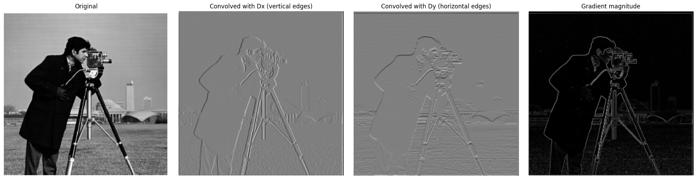
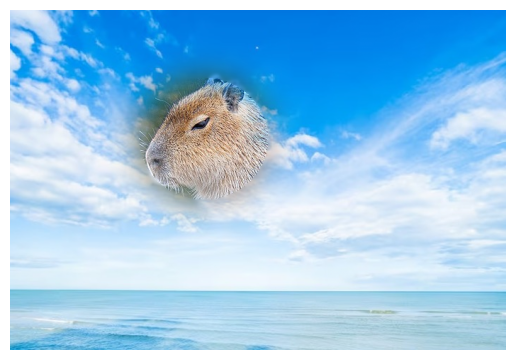

← Back
CS 180 Project 2: Fun with Filters and Frequencies!
Part 1: Fun with filters
Part 1.1: Convolutions from Scratch!
I implemented 2D convolution using a 4-loop function (left) and a 2-loop function (right). The 4-loop function is the slowest because it loops over every single pixel in the image and the kernel. The 2-loop version is faster since it uses Numpy's vectorized operations in the innermost loop. However, both versions are still significantly slower than scipy.signal.convolve2d, which is implemented in optimized C.
The functions I implemented always pad the edges with zeros. This could cause artificial dark edges. In contrast, scipy.signal.convolve2d allows users to choose a boundary condition ('fill', 'symm', 'wrap') which could help produce cleaner results at the borders.
Below are images of myself convolved with the box filter and the finite difference operators.
Part 1.2: Finite Difference Operator
I convolved the cameraman image with finite difference operators D_x and D_y, and computed the gradient magnitude image as shown below.

To turn the gradient magnitude image into an edge image, I binarize the gradient magnitude image by setting a threshold of 0.06, allowing us to remove most of the noise and preserve the real edges.
Part 1.3: Derivative of Gaussian (DoG) Filter
I blurred the original image using a Gaussian filter and repeated the procedure above. By using the Gaussian filter G as a smoothing operator, much of the noise could be removed and we can also set the threshold to a lower value of 0.04. The edges in the binarized edge image are also much thicker.
Next, I did the same thing with a single convolution by creating a derivative of Gaussian filters. The resulting edge image is the same as before as shown above.
Part 2: Fun with Frequencies!
Part 2.1: Image "Sharpening"
Here are some other images that are sharpened using the unsharp mask filter:
Part 2.2: Hybrid Images
Here are some hybrid images:
For the first hybrid image, here is the process illustrated through frequency analysis:
Part 2.3: Gaussian and Laplacian Stacks
I implemented a Gaussian and a Laplacian stack, and applied them to the Oraple:
Part 2.4: Multiresolution Blending
Here are some images that have been blended together using both regular and irregular masks

Here is an illustration of the process used to create one of the blended images